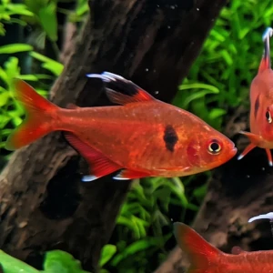

Nome popular principal
Mato Grosso
Mato Grosso, Tetra Mato Grosso, Serpae Tetra
Ficha de peixe
Tetras e Caracídeos
Um pequeno tetra de coloração avermelhada vibrante que se destaca e traz movimento a aquários plantados.

Nome popular principal
Mato Grosso, Tetra Mato Grosso, Serpae Tetra
Nome científico
Nome técnico essencial para taxonomia, cruzamento de manejo e referência editorial consistente.
Dificuldade de manejo
Use este nível como referência inicial, sempre considerando volume, estabilidade e compatibilidade do aquário.
Seção 1
Seção 2
Seções 4 a 6
Mato Grosso tem hábito alimentar onívoro. Excelente. 1 a 2 vezes ao dia. Aceita prontamente rações em flocos ou grânulos finos, complementadas periodicamente com alimentos vivos como dáfnias e artêmias.
Fêmeas adultas são mais encorpadas e possuem abdômen volumoso, enquanto machos são mais esguios e avermelhados. Tipo de reprodução: Ovíparo. Dificuldade de reprodução: Intermediário. Espécie ovípara que desova entre a vegetação densa, sendo necessário separar os pais após a postura para evitar o canibalismo dos ovos.
Alta. Substrato recomendado: Substrato escuro ou areia fina de rio. Necessidade de esconderijos: Média. Exibe suas cores com maior intensidade em ambientes bem plantados, com troncos, raízes e iluminação levemente difusa.
Seção 7
Atinge em média 4.5 cm e mantém excelente saúde quando criado em água limpa e ligeiramente ácida.
Seção 8
É considerado semi-agressivo por ter o hábito de beliscar nadadeiras veis de peixes lentos, mas o comportamento diminui bastante em cardumes grandes.
Recomenda-se manter no mínimo 8 indivíduos para que foquem suas disputas territoriais dentro do próprio grupo.
Prefere água levemente ácida a neutra, com PH mantido idealmente na faixa entre 6.0 e 7.2.